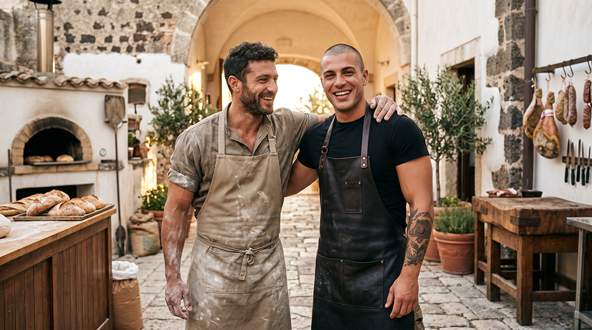
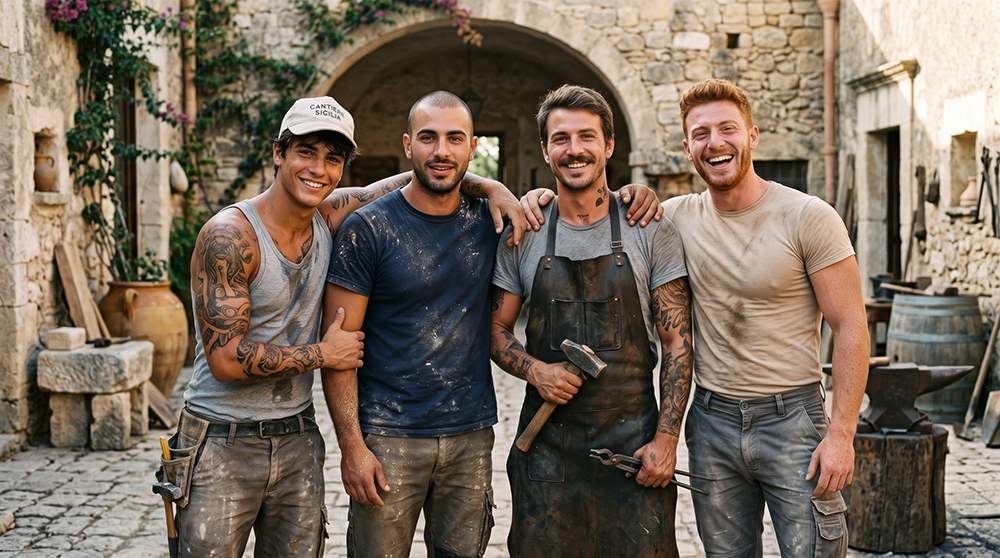
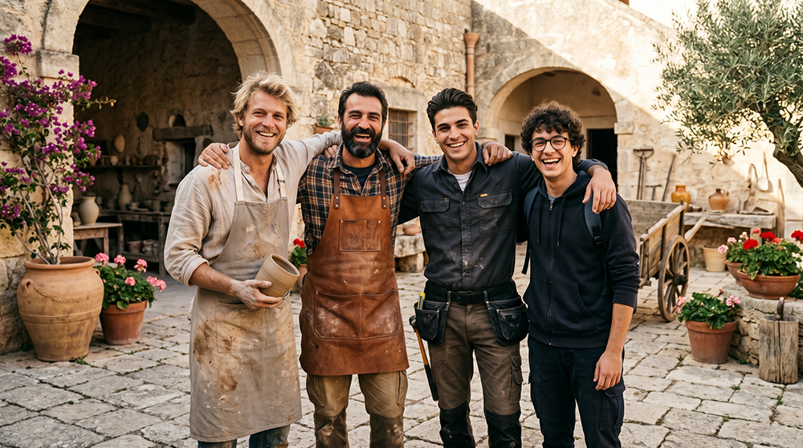

Opportunità di lavoro
Figure professionali richieste


1. Produzione primaria agricola e zootecnica
Priorità assoluta – autosufficienza alimentare.
- Agricoltore / contadino biodinamico (4-6 unità full-time). Gestione integrata di colture tradizionali con metodi biodinamici e rigenerativi del suolo.
- Esperto di potature e arboricoltura tradizionale (almeno 2 unità). Cura di ulivi secolari e alberi da frutto secondo tecniche storiche.
- Ortolano e produttore di ortaggi stagionali (2-3 unità). Gestione di orti familiari e collettivi.
- Allevatore specializzato di pollame (1-2 unità).
- Allevatore di capre (almeno 1 unità).
- Allevatore di maiali (almeno 1 unità).
- Pastore / allevatore di piccoli ruminanti (1-2 unità).
- Allevatore di animali da cortile minori (1 unità, integrabile).

2. Trasformazione alimentare artigianale
- Fornaio (1-2 unità con forno a legna tradizionale). Produzione quotidiana di pane, focacce e prodotti da forno con farine locali e lievito madre.
- Macellaio / norcino (1 unità). Macellazione, insaccati e conservazione della carne secondo metodi tradizionali siciliani.

3. Artigianato, restauro e manutenzione edilizia
- Muratore / restauratore specializzato in tecniche tradizionali e pietra iblea
- Falegname
- Fabbro
- Artigiani della pietra iblea (scalpellini, posatori)

4. Figure complementari di supporto alla comunità
- Ceramisti, ebanisti e altri artigiani manifatturieri
- Professionisti in smart working con competenze manuali/artigianali/tecniche
Invia la tua candidatura
Se possiedi una delle competenze indicate o sei fortemente motivato ad acquisirle, compila il modulo qui sotto.